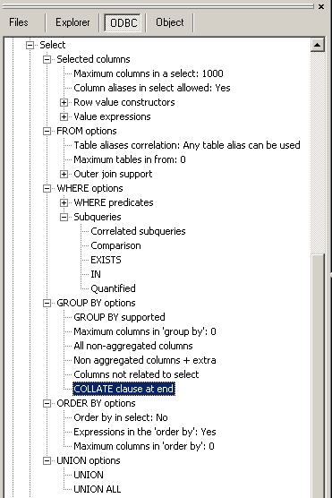

Use this command to retrieve data from one or more tables, views or synonyms.
|
Syntax of the SQL statement |
|
SELECT [DISTINCT | ALL] [* | expression [[AS] column_alias]] [,...] FROM table [[AS] table_alias] {[join ...] | [,...]} [WHERE search-condition] [GROUP BY column_alias [,...]] [HAVING search-condition] [ORDER BY column_alias [ASC | DESC][,...]]
[UNION [ALL | INTERSECT | EXCEPT] SELECT .... ] ; |
|
table ::=
base-table-name | view-name | synonym-name |
|
join ::=
INNER JOIN | NATURAL JOIN | LEFT OUTER JOIN | RIGHT OUTER JOIN | FULL OUTER JOIN | CROSS JOIN | EXCEPT JOIN | INTERSECT JOIN | UNION JOIN |
The ODBC Info tree reports on a lot of options and possibilities supported by your RDBMS. Explore this tree to see which options are supported.

See also: DELETE , INSERT , UPDATE